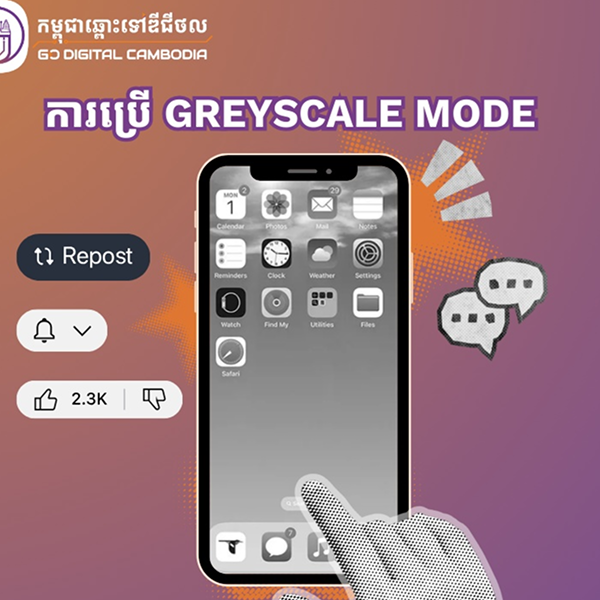

ភាគច្រើនយើងតែងតែមើលរំលងផលប៉ះពាល់អវិជ្ជមាននៃការមើលអេក្រង់ទូរស័ព្ទរយៈពេលយូរ។ អត្ថបទនេះនឹងជួយណែនាំអ្នកក្នុងការកំណត់ពេលវេលា និងការមើលទូរស័ព្ទឱ្យបានត្រឹមត្រូវ។ តាមពិតទៅ នាពេលបច្ចុប្បន្ននេះយើងស្ទើរតែមិនអាចគេចចេញពីការមើលអេក្រង់ទូរស័ព្ទបានឡើយ។ ជាមួយនឹងបច្ចេកវិទ្យាដែលជួយឱ្យមនុស្សរក្សាទំនាក់ទំនងបានល្អទោះបីនៅឆ្ងាយពីគ្នាយ៉ាងណា ការមើលប្រព័ន្ធផ្សព្វផ្សាយសង្គមផ្សេងៗតាមរយះអេក្រង់ទូរស័ព្ទគឺមានភាពងាយស្រួលនិងឆាប់រហ័សដែលធ្វើឱ្យអ្នកមើលច្រើនម៉ោងប្រសិនបើអ្នកមិនមានការគ្រប់គ្រងអោយបានត្រឹមត្រូវ។
តើការមើលអេក្រង់រយៈពេលប៉ុន្មានម៉ោង ទើបមានន័យថាច្រើនខ្លាំង? តាមការស្ទង់មតិដែលធ្វើឡើងដោយ AIA បានរកឃើញថា មនុស្សពេញវ័យនៅប្រទេសសិង្ហបុរីចំណាយពេលយ៉ាងតិច 6 ម៉ោងក្នុងមួយថ្ងៃដើម្បីធ្វើការលើកុំព្យូទ័ររបស់ពួកគេ និងលើអេក្រង់ 4 ម៉ោងបន្ថែមទៀតសម្រាប់ការកម្សាន្ត។

ការប្រើប្រាស់អេក្រង់រយៈពេលយូរ

សុខភាពឌីជីថល
តើមានអ្វីកើតឡើងនៅពេលដែលអ្នកមើលអេក្រង់ច្រើនពេក?
ផលវិបាកដ៏សំខាន់មួយនៃការមើលអេក្រង់ច្រើនពេក គឺការថយចុះគុណភាពនៃការគេង។ ពន្លឺពណ៌ខៀវដែលបញ្ចេញពីអេក្រង់អាចបន្ថយកម្រិត Melatonin ដែលជាអរម៉ូនបញ្ចេញនៅក្នុងកន្លែងងងឹតដែលជួយឱ្យគេងលក់ស្រួល។ ការប្រតិកម្មជាមួយនឹងព័ត៍មានដែលបានឃើញច្រើន អាចធ្វើឲ្យអ្នកមានការរំជួលចិត្តខ្លាំង ហើយអាចបណ្តាលឱ្យគេងមិនលក់ (Insomnia)។ ការគេងមិនគ្រប់គ្រាន់នឹងបង្កើនការងងុយគេងនៅពេលថ្ងៃ ដែលធ្វើឱ្យកាត់បន្ថយផលិតភាពការងារ។
ការសិក្សាបានបង្ហាញអោយឃើញថា នៅពេលអ្នកបានមើលព័ត៍មានច្រើនពេកតាមរយះអេក្រង់ទូរស័ព្ទ វានឹងនាំឱ្យមានកង្វះខាតនៃការគេងប្រកបដោយគុណភាពដែលរារាំងសមត្ថភាពយល់ដឹងរបស់អ្នកក្នុងការរក្សាព័ត៌មានថ្មីៗ។ ដូច្នេះ មនុស្សពេញវ័យគួរកំណត់ម៉ោងអេក្រង់នៅក្រៅម៉ោងការងារឱ្យតិចជាងពីរម៉ោងក្នុងមួយថ្ងៃ។ គោលដៅនេះហាក់ដូចជាមិនអាចទៅរួច ប៉ុន្តែជាមួយនឹងការកំណត់នូវឧបករណ៍ត្រឹមត្រូវ អ្នកនឹងមិនជួបប្រទះផលប៉ះពាល់នៃការមើលអេក្រង់ច្រើនទៀតទឡើយ។
ដើម្បីគ្រប់គ្រងពេលវេលាតាមអេក្រង់ទូរស័ព្ទរបស់អ្នក អ្នកអាចតាមដានការប្រើប្រាស់ និងកំណត់ពេលវេលានៅលើកម្មវិធីដែលអ្នកចំណាយពេលច្រើនបំផុត។ ដើម្បីការពារភ្នែក សូមសាកល្បងអនុវត្តតាមគោលការណ៍ 20-20-20។ រៀងរាល់ 20នាទីម្តងដែលអ្នកចំណាយលើឧបករណ៍អេឡិចត្រូនិក សូមក្រឡេកមើលទៅឆ្ងាយពីអេក្រង់រយៈពេល 20វិនាទីនៅវត្ថុដែលមានចម្ងាយ 20ហ្វីត (ប្រហែលប្រាំមួយម៉ែត្រ)។ ការសិក្សាមួយបានបង្ហាញថាការប្រកាន់ខ្ជាប់នូវគោលការណ៍នេះ អាចកាត់បន្ថយការប៉ះពាល់នឹងពន្លឺពណ៌ខៀវជាប្រចាំ និងជួយការពារការរំញោចផ្លូវចិត្ត។

ទម្លាប់ល្អសម្រាប់សុខភាព

ជីវិតមានតុល្យភាព
ស្មាតហ្វូនត្រូវបានរចនាឡើងដើម្បីរក្សាការយកចិត្តទុកដាក់ប៉ុន្តែការមើលទូរ័ព្ទរបស់អ្នកក្នុងទម្រង់អេក្រង់ប្រផេះអាចជួយកាត់បន្ថយ "ភាពទាក់ទាញ" នៃទូរស័ព្ទរបស់អ្នក និងពេលវេលាមើលអេក្រង់ទូរស័ព្ទផងដែរ។ ទោះជាយ៉ាងណាក៏ដោយ ការចំណាយពេលច្រើនពេកលើទូរសព្ទធ្វើឱ្យប៉ះពាល់ដល់សុខុមាលភាពទូទៅរបស់អ្នក ដូច្នេះមេរៀនសំខាន់គឺត្រូវរក្សាពេលវេលាមើលអេក្រង់របស់អ្នកឱ្យបានត្រឹមត្រូវ ហើយផ្លាស់ប្តូរការផ្តោតអារម្មណ៍របស់អ្នកឱ្យឆ្ងាយពីឧបករណ៍ឌីជីថលរបស់អ្នកនៅពេលដែលអ្នកអាចធ្វើបាន។
អំពេីគំនិត
ដែលត្រូវបានរៀបចំឡើងយ៉ាងសម្រិតសម្រាំងសម្រាប់មន្ត្រីរាជការ និងសាធារណជនទូទៅ ដើម្បីបង្កើនសមត្ថភាព និងប្រសិទ្ធភាពក្នុងការបំពេញការងារប្រចាំថ្ងៃ។ នៅក្នុងទំព័រនេះ មានការបែងចែកខ្លឹមសារជាច្រើនផ្នែកដែលបំពេញឱ្យគ្នាទៅវិញទៅមក ចាប់តាំងពីការផ្ដល់នូវបច្ចេកទេស និងរបៀបធ្វើការឱ្យកាន់តែប្រសើរតាមរយៈការប្រើប្រាស់បច្ចេកវិទ្យាឌីជីថល ការបើកឱកាសឱ្យមន្ត្រីសាធារណៈបានបញ្ចេញមតិយោបល់ និងទស្សនវិស័យផ្ទាល់ខ្លួនទៅលើការអភិវឌ្ឍសង្គមជាតិ ការលើកយកនូវសមិទ្ធផលលេចធ្លោដែលកើតចេញពីការច្នៃប្រឌិតក្នុងជួររដ្ឋាភិបាលមកបង្ហាញ រហូតដល់ការសិក្សាស្រាវជ្រាវ និងវិភាគយ៉ាងស៊ីជម្រៅទៅលើបញ្ហាសង្គមនានាដែលកំពុងកើតមានឡើង។ ជារួមមក ម៉ឺនុយនេះដើរតួនាទីយ៉ាងសំខាន់ជាស្ពានចម្លងចំណេះដឹង និងជាប្រភពនៃការជំរុញទឹកចិត្តឱ្យមានការបង្កើតថ្មីឥតឈប់ឈរ សំដៅប្រែក្លាយសេវាកម្មសាធារណៈឱ្យកាន់តែមានភាពទំនើប ទាន់សម័យ និងអាចឆ្លើយតបទៅនឹងតម្រូវការរបស់ប្រជាពលរដ្ឋបានយ៉ាងមានប្រសិទ្ធភាពបំផុត។
សង្ខេបអត្ថបទ៖ តើការមើលអេក្រង់រយៈពេលប៉ុន្មានម៉ោង ទើបមានន័យថាច្រើនខ្លាំង?
តើការមើលអេក្រង់រយៈពេលប៉ុន្មានម៉ោង ទើបមានន័យថាច្រើនខ្លាំង? ការប្រើប្រាស់អេក្រង់លើសពី ២ ម៉ោងក្នុងមួយថ្ងៃសម្រាប់ការកម្សាន្ត អាចបង្កផលប៉ះពាល់អវិជ្ជមានយ៉ាងខ្លាំងដល់សុខភាព រួមមានការចុះខ្សោយភ្នែក និងការបាត់បង់គុណភាពនៃការគេង ដោយសារពន្លឺពណ៌ខៀវរារាំងអរម៉ូន Melatonin។ ដើម្បីដោះស្រាយបញ្ហានេះ យើងគួរអនុវត្តច្បាប់ ២០-២០-២០ ដោយសម្រាកភ្នែករាល់ ២០ នាទីម្ដង រួមជាមួយការប្រើមុខងារអេក្រង់ពណ៌ប្រផេះដើម្បីកាត់បន្ថយភាពទាក់ទាញនៃស្មាតហ្វូន។ ការចេះគ្រប់គ្រងពេលវេលា និងការប្រើប្រាស់បច្ចេកវិទ្យាឱ្យបានត្រឹមត្រូវ មិនត្រឹមតែជួយការពារសុខភាពរាងកាយប៉ុណ្ណោះទេ ប៉ុន្តែថែមទាំងជួយបង្កើនផលិតភាពការងារ និងរក្សាសុខុមាលភាពផ្លូវចិត្តឱ្យកាន់តែប្រសើរឡើងផងដែរ។ ការអនុវត្តច្បាប់ ២០-២០-២០ គឺជាវិធីសាស្រ្តដ៏មានប្រសិទ្ធភាពបំផុតមួយដើម្បីកាត់បន្ថយភាពនឿយហត់នៃភ្នែក ដោយអ្នកគ្រាន់តែឈប់សម្លឹងអេក្រង់រៀងរាល់ ២០ នាទីម្ដង រួចក្រឡេកទៅសម្លឹងវត្ថុអ្វីមួយដែលមានចម្ងាយប្រហែល ៦ ម៉ែត្រ ឬ ២០ ហ្វីត ក្នុងរយៈពេល ២០ វិនាទី ដើម្បីឱ្យសាច់ដុំភ្នែកបានធូរស្បើយពីការប្រឹងសម្លឹងក្នុងចម្ងាយជិត។ ទន្ទឹមនឹងនេះ ការបើកមុខងារអេក្រង់ប្រផេះ ឬ Grayscale Mode នៅលើទូរស័ព្ទដៃ ក៏ជាយុទ្ធសាស្រ្តផ្លូវចិត្តដ៏ពូកែមួយផងដែរ ព្រោះការប្តូរពណ៌ដ៏ស្រស់ឆើតឆាយឱ្យទៅជាពណ៌សខ្មៅ នឹងធ្វើឱ្យកម្មវិធីកម្សាន្តនានាបាត់បង់ភាពទាក់ទាញ ដែលជួយកាត់បន្ថយការចង់អូសទូរស័ព្ទមើលដោយឥតប្រយោជន៍ និងជួយឱ្យខួរក្បាលមិនសូវមានការរំញោចខ្លាំងពេកមុនពេលចូលគេង។